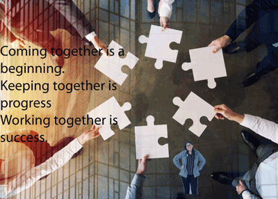

My current major is Information Management and Technology with a concentration in Information Security. I’m interested in analyzing ways to create more secure businesses and learning about the many positions in cybersecurity. The skills that I have been able to learn throughout my education are communication, organization, people skills, problem solving abilities, and collaborative skills. I learned these skills from my previous jobs as well. Outside of school and work, I enjoy playing soccer or going to the gym. I consider myself as an outside person because nature is beautiful and enjoy taking pictures. I like to go on walks/hikes with my friends on my free time. I appreciate the support from my family and I want to make them very proud. I love spending time with my family, and I try my best to be with them when I can.
I love teamwork!
Personal Information:Hobbies
- Soccer
- Travel
- Running
- Hiking